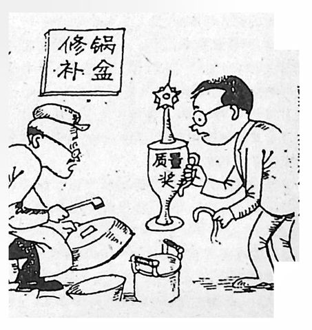

False reporting and boasting 6
-
 吹的纪录 · A Record in Blowing
吹的纪录 · A Record in Blowing
Li Tiecheng 李铁成. Renshi (Personnel), 1986 no. 1 (whole no. 4), p. 41. -
 无题 · (Untitled)
无题 · (Untitled)
Unattributed. Renshi (Personnel), 1986 no. 4 (whole no. 7), p. 47. -
 眼睛亮 耳朵聋 · Sharp Eyes, Deaf Ears
眼睛亮 耳朵聋 · Sharp Eyes, Deaf Ears
Nie Xuhua 聂旭华. Renshi (Personnel), 1986 no. 5 (whole no. 8), p. 11. -
 保护现场 · Protecting the Scene
保护现场 · Protecting the Scene
Li Baotang 李保堂. Renshi (Personnel), 1988 no. 12 (whole no. 39), inside back cover. -

劳驾！把奖杯修一修 · Excuse Me — Could You Mend This Trophy?
Unattributed. Renshi (Personnel), 1990 no. 8 (whole no. 59), p. 37. -
 造假学院招生简章（题图） · Admissions Prospectus of the College of Forgery (header drawing)
造假学院招生简章（题图） · Admissions Prospectus of the College of Forgery (header drawing)
Unattributed. Renshi (Personnel), 1990 no. 11 (whole no. 62), p. 40.